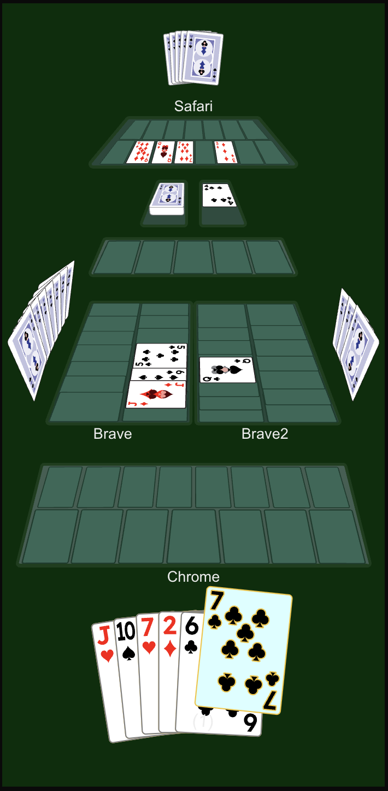

Digital Deck
A full-stack multiplayer app that simulates a shared physical card deck online. Players create or join a session with a short code, then draw, discard, and play from a server-authoritative deck in real time, so no client can see the shuffle or another player's hand.
Status: Phase 1 complete (playable locally) · Phase 2 in progress. Together, the two phases make up v1.
Tech stack
- Backend: Java, Spring Boot, Spring Web (REST), Spring WebSocket (STOMP), Spring Data Redis, Spring Data JPA, Maven
- Frontend: TypeScript, React 19, Next.js 16, Tailwind CSS 4, STOMP.js
- Data: Redis for live session state; PostgreSQL connected through JPA for future durable data
- Infra: Docker Compose
Architecture
React / Next.js --REST--> Spring Boot --> Redis (live game state)
| |
+--STOMP / WebSocket-----+
+--> PostgreSQL
REST handles session creation, lobby settings, and card actions (draw, discard, play, keep). STOMP broadcasts events such as PLAYER_JOINED, CARD_DRAWN, and TURN_CHANGED, so every connected client stays in sync.
Design decisions
- The server is authoritative. Spring Boot owns the deck, shuffle, deal, and turn rules, and clients never hold game state they could tamper with.
- Redis holds short-lived multiplayer state (roster, deck order, hands, play areas, turns) for fast reads and writes during play.
- Turn, discard, and play permissions go through a single unit-tested
TurnActionPolicyinstead of checks scattered across endpoints.
Phase 1: what works
- Join-code sessions with a live roster, host transfer, and disconnect grace handling.
- Host lobby settings: turn or free rotation, discard and play modes, 1–3 decks, and cards dealt per player.
- Draw, multi-card discard, play to face-up slots, a shared dealer board, and automatic reshuffle when the draw pile runs out.
- An SVG table for 1–6 players with viewer-relative seating and opponent hand counts.
- Sessions are restored after a page refresh, with the private hand fetched again from the server.
Gameplay
A four-player game from one player's seat: opponents' hand backs and face-up played cards around the table, the draw and discard piles, the shared dealer board, and the player's own hand at the bottom with the last drawn card highlighted.

How it was built
Phase 1: hand-built (complete). I used AI (Cursor and Claude) only in ask mode, to explain options, sketch designs, and help debug. I wrote every code change myself. The repo's ai-conversations/ folder logs those sessions as a record of the decisions behind the app.
See the phase 1 code.
Phase 2: finishing v1 with Claude Code (in progress). In the year since I left my last company, its stance on AI went from not allowed to developers being encouraged to use it as heavily as possible. I'd rather build the skills the job now requires than pretend it isn't changing. In phase 2, Claude Code writes the code while I own the requirements, interfaces, tests, and review. I'm grounding that in John Ousterhout's A Philosophy of Software Design, along with AI-written notes I've been working through on how its ideas change when AI writes the code.
How to run locally
Start Postgres and Redis, then the backend from backend/ and the frontend from frontend/:
docker compose up -d
cd backend && ./mvnw spring-boot:run
cd frontend && npm install && npm run dev
Open http://localhost:3000, create a session, and share the join code with other players.